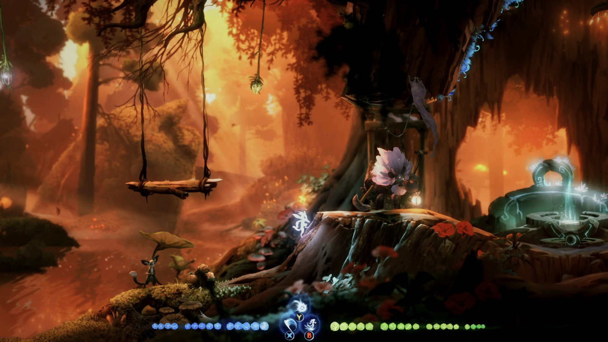

It was always hard to find anything bad to say about 2015’s Ori and the Blind Forest. Moon Studios’ blend of an entrancing, tragic fairy tale world and white-knuckle platforming challenge left a mark that hasn’t faded with time. And yet the new followup, Ori and the Will of the Wisps, successfully builds on that distinctive gameplay in a way that doesn’t just retread the same ground. There’s more breadth, detail, choice, and diversity than ever, and it’s all done with engrossing color and light and an excellent, inspiring soundtrack.
It may be two-dimensional, but this is a great, big, open world that’s backed by a great, big, beautiful score that shifts to echo your successes and grows frantic and immediate in moments of tension. That music is your constant companion as you journey through diverse locations that sprawl out in all directions. Will of the Wisps paints with a full pallet of distinct biomes, transitioning seamlessly from the archetypical fairytale forests pierced with soft, golden streaks of light through the emerald canopy to the gloomy, ink-blotted muddy floor of the soggy marshlands. Each region bursts with fine detail that’s easy to overlook because Moon Studios’ aesthetic moods for each location are so consistent. All of them feel distinct and alive.
Ori and the Will of the Wisps reinforces that theme of a wider, living world with a menagerie of creatures to fight, big and small: dive-bombing mosquitos, slugs that spit caustic goo, dangling spiders, piranhas, spiky slimes, leaping elemental mantis-things, and hulking decay-touched bruisers with massive clubs kept me on my toes in every new place I visited. There’s a healthy bestiary to test your mettle. But alongside these many enemies, friendly woodland critters and massive animal guardians hide and thrive in each area, ready to make your acquaintance. These non-player characters pop up frequently, telling you about their home lives, their current predicaments, the changes happening to the world at large, and tidbits of information concerning Ori’s grand adventure. Often, these short conversations come with requests which serve as simple side quests to keep you invested in the here and now. You might be asked to find a lost acorn in a cave, or check on some family members in a faraway region, or hear a useful rumor about a shrine that’s then marked on your map to investigate later.
Looking back I regret that, at first, I didn’t venture too far out of my starting abilities because they worked. But the diversity and utility of each ability, both in and out of combat, makes many of them must-haves. For example, not only does that heavy Spirit Smash deliver big damage and knock enemies up, but it’s also used to crush through breakable barriers. And though the Spike ability that allows Ori to hurl a massive spirit lance costs a ton of energy to use, it regularly saved my life in several of the multi-phased boss battles where I used it to stagger the massive monsters mid-attack and buy some breathing room. And alongside these active abilities, Will of the Wisps tweaks an old formula in the form of Spirit Shards that bestow passive attributes to Ori as you find or buy them and equip them in the few precious slots you get. These abilities run the gamut from combat-focused to pure utility and really allow you to customize your little spirit… squirrel...thing in unique ways to suit your playstyle.
In Ori and the Will of the Wisps, Moon Studios has taken an excellent foundation and made even more out of it. Its many new elements expand on and add to the first game’s fun without bogging it down or becoming overcomplicated. And that’s really the best praise you can give a sequel - it stays true to the spirit of the original, doubles down on what made it great, and gives you more stake in the world and options to navigate it. Ori and the Will of the Wisps is an excellent heartfelt follow-up that pushes the series to new heights.